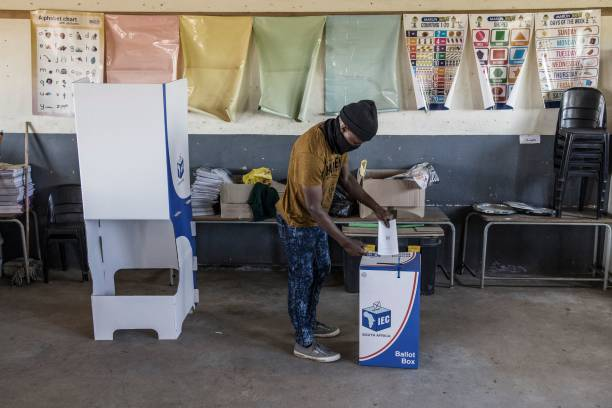

The introduction of an online voting system represents a significant leap forward in addressing the persistent issue of exclusion in the voting process. By shifting the voting process to a digital platform, we are breaking down traditional barriers that have long prevented individuals from participating in elections. Now, people who face physical limitations, those who live in remote areas, and those with busy schedules can all have equal access to the voting process. This technology ensures that every eligible voter, regardless of their circumstances, can exercise their democratic right. It fosters inclusivity, making sure that no one is left behind and that the voices of all citizens can be heard, ultimately strengthening the foundations of our democracy.
The advent of an online voting system brings with it a host of advantages, foremost among them being the unparalleled convenience it offers to voters. Traditional voting methods often entail long queues and time-consuming visits to physical polling stations, which can be particularly challenging for individuals with busy schedules, mobility issues, or those residing in remote areas. Online voting eliminates these barriers, enabling citizens to cast their ballots from the comfort of their homes, workplaces, or any location with internet access. This convenience not only makes the democratic process more accessible but also encourages greater participation, ensuring that every voice is heard and every vote counts. With online voting, the power to shape the future is placed squarely in the hands of the people, transforming the way we engage in our democratic responsibilities.
